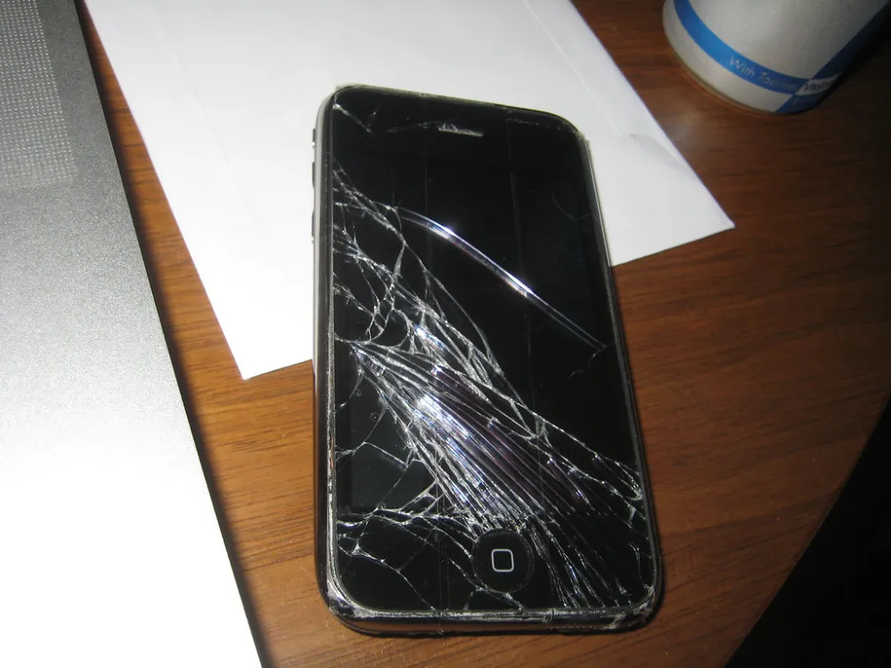

Téléphonie & Informatique
Réparer et optimiser · 6 guides vérifiés, pas à pas.
Les fiches du domaine Téléphonie & Informatique
Imprimante qui laisse des traits : nettoyer les têtes
Lignes blanches ou couleur qui manque : l'encre a souvent séché dans les buses. L'utilitaire de nettoyage de l'imprimante règle la plupart des cas.
Nettoyer un clavier et débloquer une touche
Une touche qui accroche, répond mal ou plus du tout : des miettes ou de la poussière sont souvent coincées dessous. De l'air comprimé suffit dans bien des cas.
Ordinateur portable qui chauffe : nettoyer les aérations
Ventilateur qui souffle fort, dessous brûlant, ordinateur qui ralentit ou s'éteint : la poussière bouche souvent les aérations.

Remplacer un écran de téléphone
Un écran fissuré n'est pas une fatalité. Avec patience et le bon kit, votre téléphone repart pour des années.
Téléphone qui ne charge plus bien
Câble qui tient mal, charge qui coupe ? Le port est souvent juste rempli de poussière de poche.
Redonner de la vitesse à un vieil ordinateur
Avant de racheter, un SSD et un peu de ménage peuvent transformer votre machine.